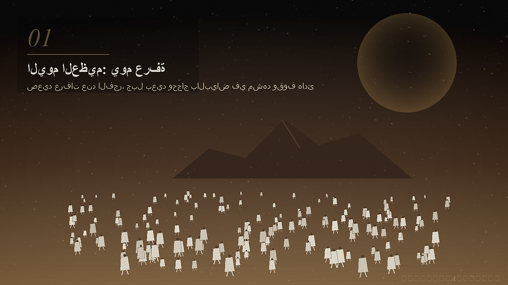
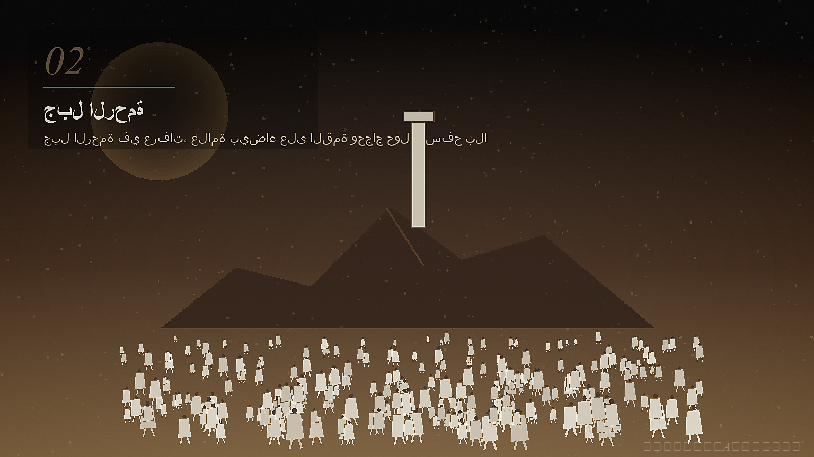
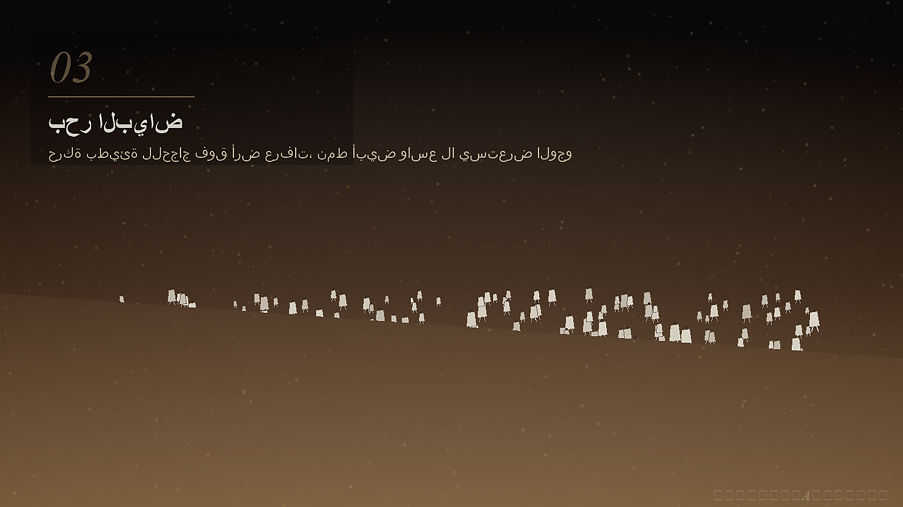
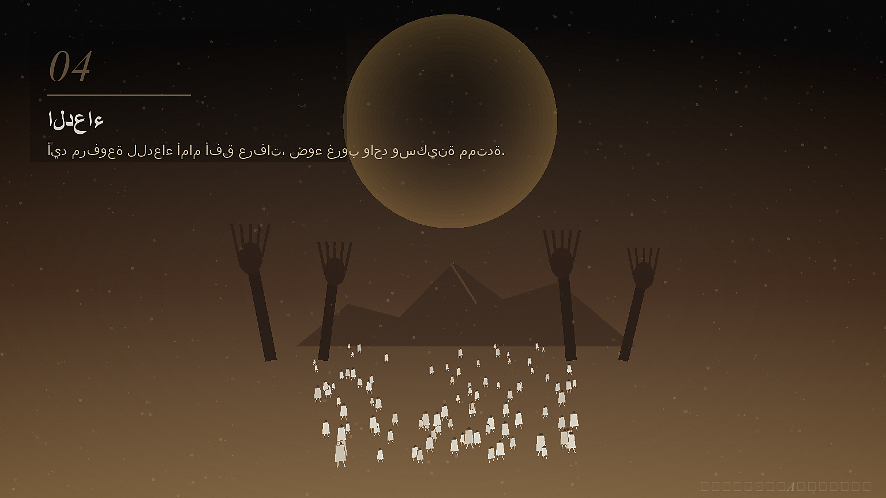
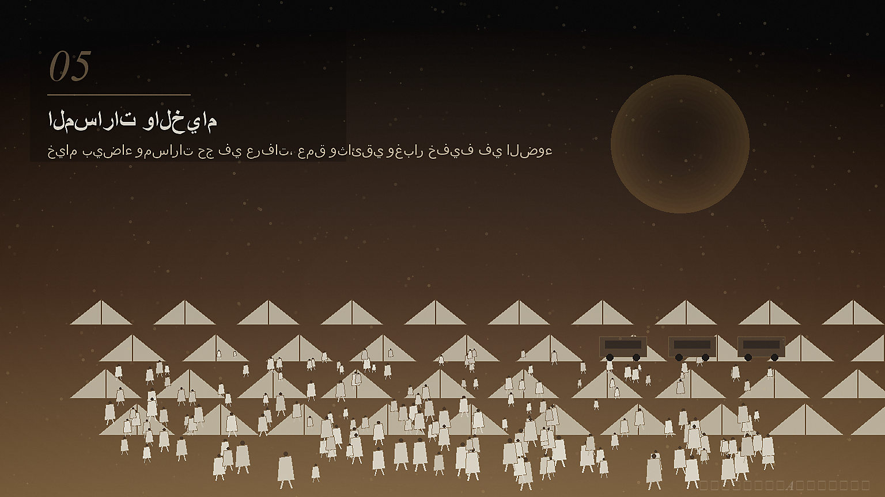
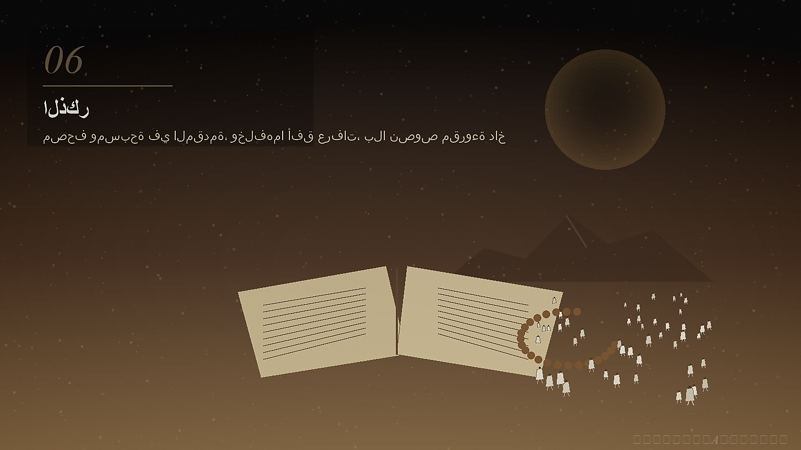
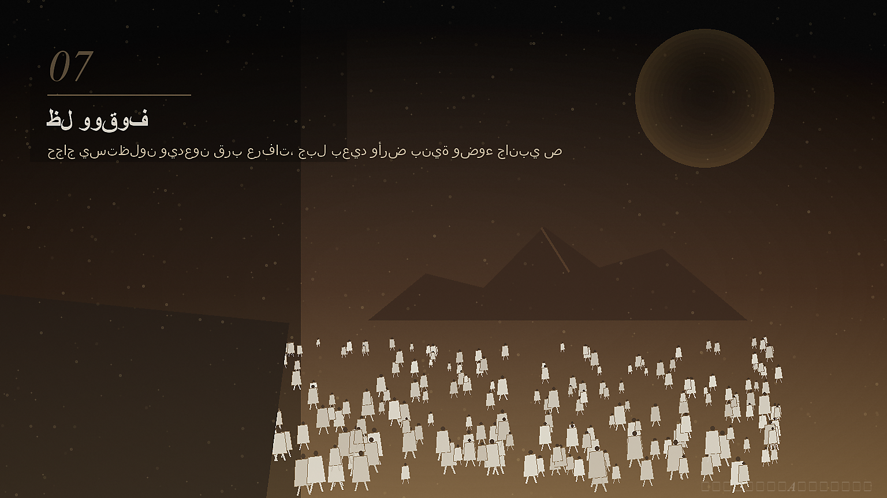
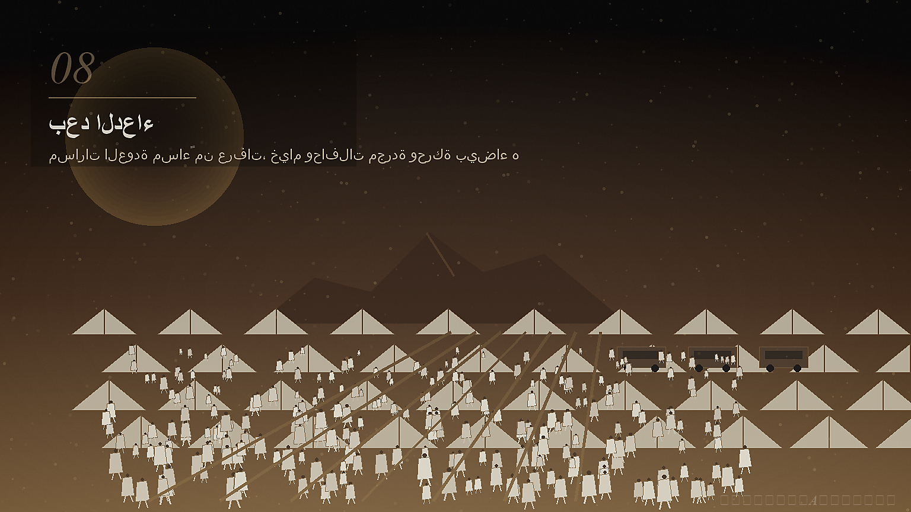
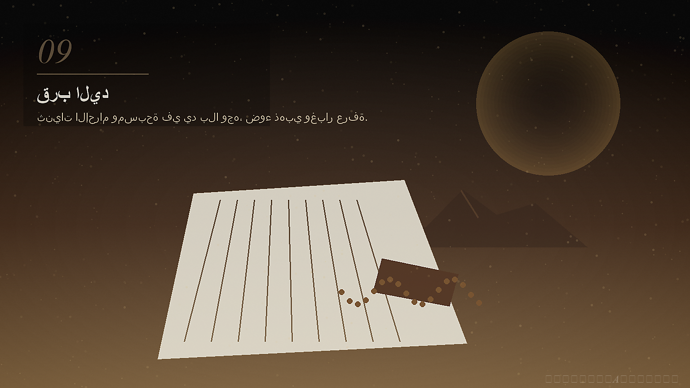
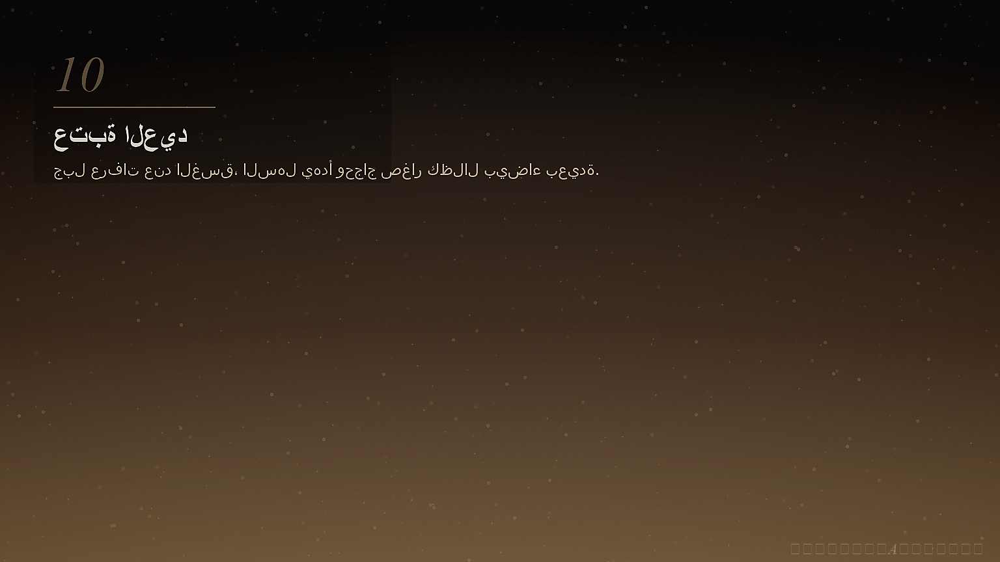

تأمل موثق
اليوم العظيم: يوم عرفة
في التاسع من ذي الحجة، يهدأ العالم قليلاً ليترك مساحة للوقوف والدعاء والرجاء.
𝓚𝓱𝓪𝓵𝓭𝓸𝓾𝓷A𝓐𝓴𝓻𝓪𝓶𝓪𝓱١ / ١٠
افتتاحية: اليوم العظيم
اليوم العظيم: يوم عرفة. يوم يهدأ فيه الضجيج، ويتسع القلب للوقوف والدعاء والرجاء.
وقفة لا تحتاج صخباً كي تبقى في الذاكرة.

٢ / ١٠
المكان والزمن
في التاسع من ذي الحجة، يتجه الحجاج إلى عرفة، ويتجه غيرهم إلى صيام ودعاء وسكينة.
اليوم التاسع من ذي الحجة.

٣ / ١٠
السياق
ليس اليوم مجرد تاريخ في التقويم، بل مساحة روحية تسبق العيد وتعيد ترتيب الداخل.

٤ / ١٠
ما حدث
يقف الحجاج بعرفة، وتتحول الساعات إلى دعاء طويل، انتظار رحيم، وصمت يعرف طريقه إلى السماء.

٥ / ١٠
الأرقام والأثر
الرقم الأوضح هنا هو التاسع: يوم واحد يترك أثراً في عام كامل من الرجاء والمحاسبة.

٦ / ١٠
طبيعة المعنى
ورد في صحيح مسلم فضل صيام يوم عرفة لغير الحاج، بلغة رجاء وتكفير ورحمة.
الفضل هنا يفتح باب الرجاء ولا يحوّل اليوم إلى ضجيج.

٧ / ١٠
الجهات بحذر
المشهد لا يحتاج أسماء كثيرة: حاج واقف، بيت صائم، قلب يدعو، ومصدر محفوظ في الذاكرة.

٨ / ١٠
التوثيق وردود الفعل
تحفظ المصادر الحديثية معنى اليوم، وتحفظ البيوت عادته: صيام، دعاء، وقرب لا يطلب ضجيجاً.

٩ / ١٠
الذاكرة والعدالة
عدالة النفس في هذا اليوم أن تعود إلى الحق، وتترك ما أثقلها، وتبدأ من جديد.

١٠ / ١٠
خاتمة
عرفة ليس نهاية الحكاية، بل عتبة هادئة نحو العيد: رحمة، امتنان، ووعد داخلي بالنور.

خاتمة الأرشيف
اللهم اجعل هذا اليوم باباً للرحمة، ووقفة للصدق، وذاكرة للنور.
— Khaldoun A. Akramah
𝓚𝓱𝓪𝓵𝓭𝓸𝓾𝓷A𝓐𝓴𝓻𝓪𝓶𝓪𝓱